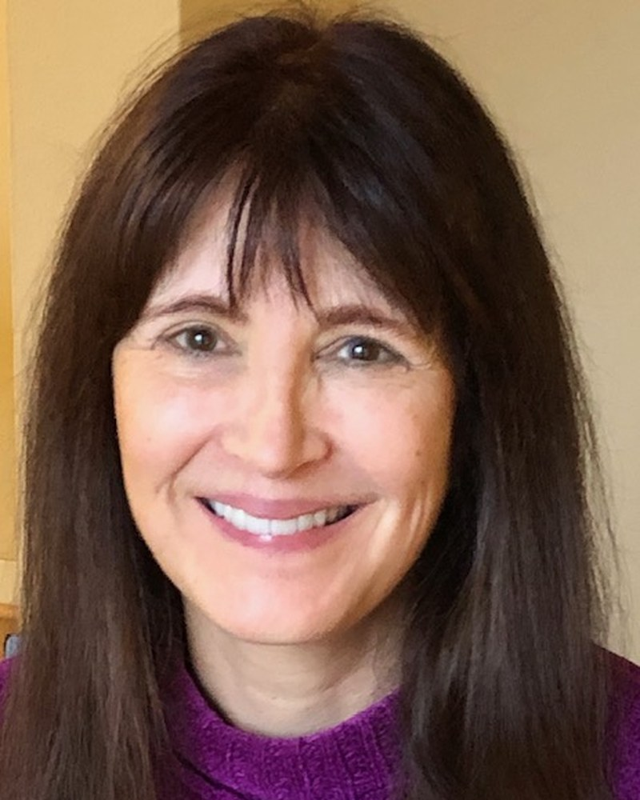

Hennacy Institute, Talent, OR, USA / University of Virginia, Charlottesville, VA, USA

Contemporary neuroscience generally assumes that conscious experience is generated through neural computation that is constrained by hierarchical sensory processing and predictive inference. An alternative possibility is that the brain functions as a transductive filter, regulating access to a broader informational field while shaping perception through selective gating. This talk examines convergent evidence from nonspeaking autism, early blindness, prolonged dark retreat, dreams, and psychedelic journeys to evaluate whether altered access states may reveal a broader reality that is not ordinarily available during consensual waking states. Despite their distinct developmental and physiological origins, these conditions frequently produce overlapping phenomenological reports, including intensified internally coherent imagery, altered self-world boundaries, expanded perceptual awareness, unusual cross-modal integration, and access to structured experiential content often described as hyper-real or ontologically significant. Such consistencies suggest that these states may reflect alterations in neural access rather than unrelated anomalies of perception or cognition. A mechanism is proposed in which variations in thalamocortical gating and inhibitory regulation modulate the degree to which sensory information is filtered before reaching conscious awareness. Under ordinary conditions, adaptive filtering stabilizes perception by constraining informational throughput to behaviorally relevant signals. When these constraints are reduced, reorganized, or developmentally atypical, previously excluded information may become available to conscious processing. This framework offers a unified interpretation of several otherwise disparate findings. In early blindness, cross-modal cortical recruitment expands nonvisual representational capacity beyond canonical sensory specialization. Psychedelic compounds such as dimethyltryptamine are associated with transient disruption of top-down predictive constraint and altered thalamic gating, frequently accompanied by reports of immersive alternate perceptual realities. Extended dark retreats similarly reduce exogenous sensory input, allowing endogenous perceptual phenomena to emerge with unusual vividness and complexity. In nonspeaking autism, atypical sensory gating and reduced cortical filtering also appear to permit forms of perception and information integration inaccessible to those with neurotypical cognitive profiles. Rather than treating these phenomena as pathological deviations or purely hallucinatory artifacts, neural transduction theory (NTT) interprets them as natural examples of altered informational access. If consciousness is filtered rather than produced by neural systems, such states may reflect changes in transductive parameters that expose latent dimensions of experience ordinarily suppressed by adaptive sensory regulation. This model could generate empirically testable predictions regarding thalamic inhibition, oscillatory coherence, cross-network integration, and sensory gating across altered states of consciousness. More broadly, it invites reconsideration of whether ordinary waking awareness reflects the full scope of conscious access or only its most biologically efficient subset.
Diane Hennacy, MD is a neuropsychiatrist and internationally recognized expert on autism and savant syndrome. She trained in neuroscience at Ohio State University and Johns Hopkins School of Medicine, where she received her MD and psychiatric training. She has been on faculty at Harvard Medical School and an invited member of think tanks, including the La Jolla Group for Understanding the Origin of Humans. She is currently serving for the third time on the Board of the Parapsychological Association. Her research focusses on autistic children who appear to have anomalous cognition, synesthesia, and savant skills. She has presented this work under the name Diane Hennacy Powell in the U.S. and abroad at three Science of Consciousness conferences and other venues. She recently founded the Hennacy Institute, a nonprofit research institute for studying neurodiversity. She collaborates with Marina Weiler, PhD (University of Oregon) and Marjorie Woolacott, PhD (University of Virginia) on two studies with nonspeaking autistic children. She has contributed chapters to five academic books, including AAPS’ Is Consciousness Primary? and the Oxford University Handbook of Psychology and Spirituality. Her 2008 book The ESP Enigma (Walker) received an award from the LA Festival of Books and has been translated into German, Portuguese, and Finnish. She is one of several neuroscientists contributing a chapter for a future book on Neural Transduction Theory to be published by Oxford University and edited by Robert Epstein, PhD. Her next book, Wired for the Impossible, discusses her research and theory of consciousness and will be published by Simon and Schuster in late 2027.